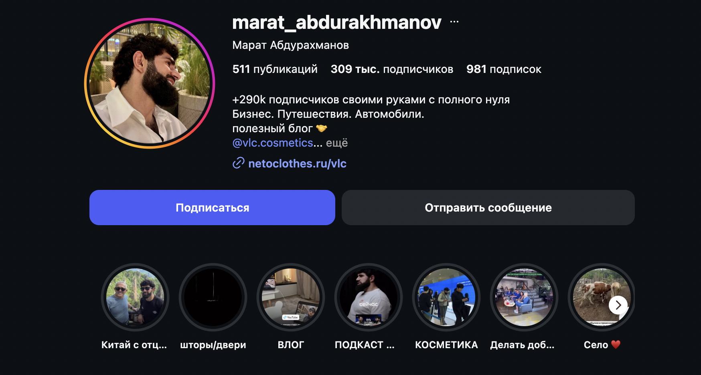
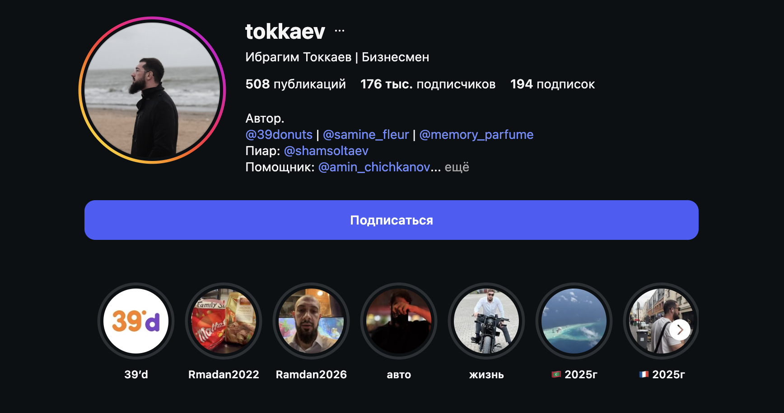
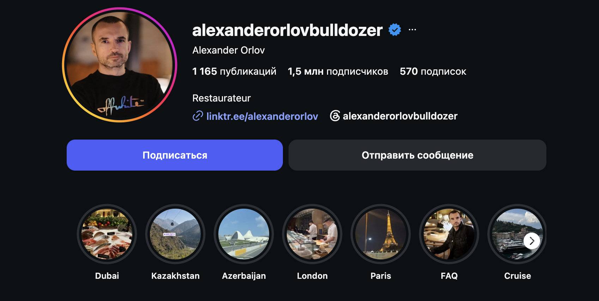
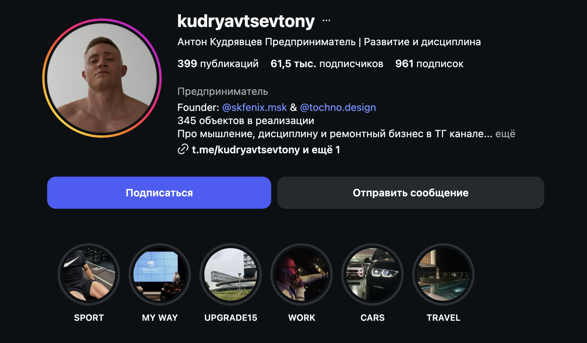
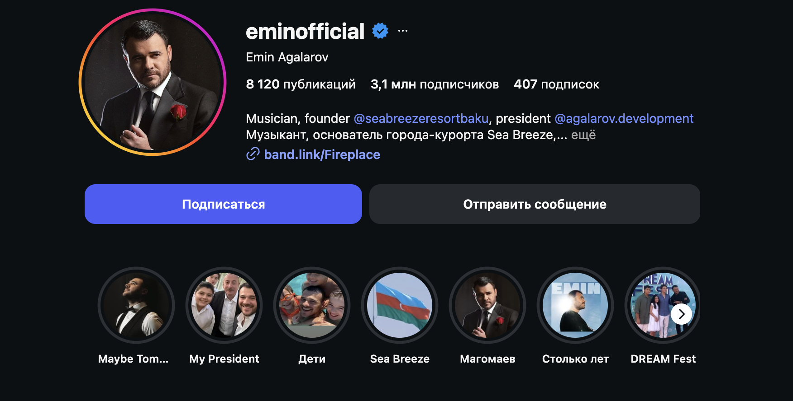

Георгий · @georgiy_gs
Строитель федерального масштаба, который построил себя сам
Как мы выстраиваем личный бренд, в каких форматах и циклах работаем и к какому результату идём. Обновлено по итогам полной распаковки.
С чего начинаем, как себя позиционируем и в каких границах работаем.
У Вас есть главное — состоявшийся предприниматель, группа компаний, реальный путь и история. Но в медийном поле Вас пока нет: блог стартует с нуля, личного бренда ещё не существует. Задача — собрать всё это в систему и упаковать в образ.
подписчиков за 3 месяца — и крепкий фундамент, на котором блог растёт дальше.
Без обещаний «100 000 за месяц». Сначала — система и образ, потом — масштабирование.
Из района, где у многих не было шансов, и ночного колл-центра — до федерального масштаба: проектирование крупнейших логистических комплексов страны и агрокомплекс будущего. Путь, пройденный самостоятельно, без связей и стартового капитала. Это история не про профессию строителя, а про человека, который читает людей и из хаоса строит системы. Показываем изнанку большого дела и то, как он мыслит.
Аудитория: мужчины-предприниматели — ядро. Весь тон и темы держим под них; сознательно не уходим в широкий «лайфстайл для всех», чтобы не размывать целевую аудиторию.
Пять мужчин-предпринимателей с сильным личным брендом. У каждого берём конкретное — а соединяем в Вашем уникальном сочетании.

Шапка: «+290k подписчиков своими руками с полного нуля. Бизнес. Путешествия. Автомобили.» Сильнее всего зашли отношения с отцом — огромный отклик у мужской аудитории.

«Бизнесмен» прямо в имени. Парень из Старых Атагов, построил компанию из ничего — без связей и капитала. Это его закреплённая история для новых подписчиков.

Ресторатор международного масштаба (Bulldozer, Дубай). Контент — масштаб бизнеса и обходы своих объектов; география в хайлайтах (Dubai, London, Paris).

«Предприниматель · Развитие и дисциплина». Founder, 345 объектов в реализации, ремонтный бизнес. Контент — прямое обращение к аудитории, дисциплина, трансформационные истории.

Артист и предприниматель (Crocus, Sea Breeze). Премиальный lifestyle высокого уровня — статус, путешествия, проекты — поданы спокойно, без надрыва.
Новый профиль @georgiy_gs на отдельный телефон. Старый — для клича в сторис «теперь здесь».
Позиционирование (ось) + доказательство масштаба (проектная компания, агрокомплекс) + призыв. Собрана ниже.
Обложки — в едином тёмном визуальном коде блога.
Самопрезентация и путь от нуля до масштаба. Точка входа, связана с закрепом.
Триатлон, дисциплина, тело, Эльбрус, старты.
Поездки, Мальдивы, география.
Машины как часть образа.
Где бываете, вкус к жизни.
Набор закреплён по распаковке: спорт, путешествия, авто-гараж (личное «отвлечение», подтвердил сам Георгий), места и вкус к жизни. Семью не светим.
Публичность для Вас чувствительна, поэтому границы зафиксированы и соблюдаются на каждой съёмке и в каждом сценарии.
По какой логике строится контент — кого цепляем, чем и почему это работает.
Рекомендации. Ловим хуком, аспирацией и эмоцией. Цель — досмотр и подписка.
Подписчики. Углубляем через путь, истории, ценности — растим доверие.
Лояльные. Будущая конверсия, когда появится воронка. Сейчас — закладываем фундамент.
Lifestyle, масштаб, артефакты — притягивает, восхищает.
Бизнес-принципы, путь — ценность для ЦА предпринимателей.
Отношения, забота — цепляет, даёт качественные комментарии.
Преодоление и спорт как характер: триатлон, Эльбрус, борьба с весом — глубокое вовлечение.
Звонки, социальный контент — охваты и характер.
Большие вопросы и устройство мира, «за мир — мы один вид», мечта об экспедициях — ломает образ «только про бетон».
Рабочие форматы блога с живыми референсами. Основные — на постоянной основе, дополнительные — по ситуации.
Говорящая голова за рулём. Камера сбоку или с торпеды, снимаем днём, город движется в окне. Крупные пословные субтитры по центру. Сдержанный образ.
Как работает: формат-носитель — под него заходит любая тема и история. Едем, я задаю вопросы, Вы рассказываете: событие или момент за неделю/месяц, случай из жизни, урок. Минимум продакшна, максимум живой речи. Рабочая лошадка блога между крупными съёмками.
Подъезжаем на машине, идём по объекту, снимаем процесс, площадку и коммуникацию с командой — под динамичную музыку, смонтировано красиво. Серийность («Обход #N») приучает аудиторию ждать продолжение.
Сюжетная линия (согласуем лично): либо ведём 1–3 конкретных объекта в развитии серией, либо показываем разные доступные объекты по принципу процесса.
Долгая линия про построение отношений и заботу о человеке — близком (родители, друг, коллега) или том, кто нуждается в помощи. Снимаем встречи, подарки, рассказываем историю человека и развиваем её во времени.
Сильный, добрый контент. У мужчин отношения с родителями — мощная, но почти никем не раскрываемая сторона. Даёт хорошие просмотры и приводит качественную аудиторию.
История, мысль или событие подаётся закадровым голосом поверх красивого кинематографичного видеоряда + субтитры. Тему берём из распаковки, я пишу текст, Вы начитываете голосовой; видеоряд собираем из съёмок и архива.
Раскрывается с запасом материала — примерно с 5–10-й съёмки, когда есть банк кадров под монтаж. Делать можно много.
Ролик на 2–3 минуты — проживаем кусок дня или события (тренировка, объект, встреча). Сейчас многие делают мини-влоги, но на пустых челленджах. У Вас есть фактура — придумывать ничего не надо, нужно качественно собрать через прожитые моменты и эмоции. Требует больше съёмки, включаем по мере набора ритма.
Взаимодействие с ближайшим окружением — друзья, коллеги, тренер, родители. Заезжаем к кому-то, кто не в курсе съёмки — живая реакция. Ситуативные нарезки, показывают лайфстайл и живое окружение.
Звоним и провоцируем живую эмоцию — в другую компанию, другу, незнакомцу: пранки, добрые постановки. Цель — вывести на эмоцию или показать, как люди ведут себя в разных ситуациях. Развлекательный формат с высокой вовлечённостью.
Кадр, где Вы что-то делаете, + нарезка из кино/мультфильма, подкрепляющая мысль. Как основной формат не используем: у Вас насыщенная событийность, своего материала много — незачем уходить в чужие нарезки.
Как устроены съёмки, банк контента и ритм публикаций.
Вы заняты и часто в разъездах (объекты, командировки, старты). Поэтому не живём в режиме «снял сегодня — выложил сегодня»: один съёмочный день раскладываем в максимум единиц (контент-каскад) и держим буфер на 2–3 недели вперёд. Всегда есть что выложить, даже если неделю не снимали.
Снимаете сами по нашему ТЗ (GoPro / Insta360). Копим travel-lifestyle и говорящие головы — к приезду уже есть из чего резать первые ролики.
Первый очный съёмочный блок + запуск аккаунта. За один день снимаем банк на 2 недели, ставим первые ролики и закреп.
Съёмка примерно раз в неделю; видеограф подключается через 1–2 месяца. Недельный цикл: съёмка → отбор → монтаж → выкладка → замер → корректировка на разборе.
Как блог растёт системно и за чем следим.
Отдельного «поиска» нет — флагман вырастет из одного из рабочих форматов. Рабочая гипотеза — социальный контент и мини-влоги. Но базовый контент обязателен как фундамент: пока нет аудитории, даже сильный ролик не выстреливает — некому досмотреть, переслать и вытолкнуть его в рекомендации. Набираем аудиторию базой → дальше любая качественная единица даёт результат, и форматы подтягивают друг друга.
Упаковка профиля (шапка, актуальные, закреп-манифест), первый съёмочный день, первые ролики «решёткой», ежедневные сторис, клич в старом профиле.
Стабильная съёмка и буфер на 2–3 недели, подключаем нарезки и закадровые озвучки, со 2-й съёмки выходим на 2 ролика в день, еженедельные разборы план-факт.
Усиливаем форматы, которые выстрелили, добиваем залетевшие темы серией, выходим к первому заметному результату (~10К). Конкретные темы по форматам — отдельным контент-планом из распаковки.
У Вас есть опыт, статус и своя история. Задача — превратить это в личный бренд, который работает на Вас. Система выстроена; дальше — съёмки, ритм и контент-план.
МаликПродюсер · Июнь 2026